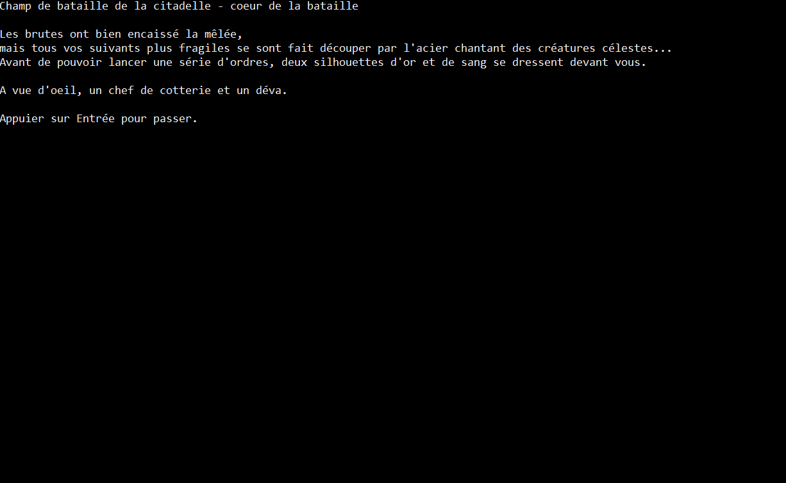

Janvier 2021

Le Prince Démon (démo)


Le prince démon est un jeu textuel crée en collaboration avec Gabriel Goldbronn (chargé de toutes les données du jeu) et Argan Delaire (lore et worldbuilding) dans le cadre d'un projet Python à HETIC.
C'est un jeu entièrement réalisé en python avec comme seul usage de bibliothèque une gestion du son grâce à Pygame.
Le jeu vous transporte dans le monde de Ljosalfer où vous jouez d'une part le prince démon pour le tutoriel et d'une autre son père, le dieu roi.
C'est un RPG scripté au tour par tour incluant des mécaniques de magie et de coups spéciaux modifiant les caractéristiques de l'ennemi.
Dans ce projet j'ai entièrement réalisé le système de combat, l'ergonomie, la narration et le visuel. Les musiques ne m'appartenant pas, elle sont toutes créditées.
Le jeu vous transporte dans le monde de Ljosalfer où vous jouez d'une part le prince démon pour le tutoriel et d'une autre son père, le dieu roi.
C'est un RPG scripté au tour par tour incluant des mécaniques de magie et de coups spéciaux modifiant les caractéristiques de l'ennemi.
Dans ce projet j'ai entièrement réalisé le système de combat, l'ergonomie, la narration et le visuel. Les musiques ne m'appartenant pas, elle sont toutes créditées.
Hetic Mini Games est un site de divertissement crée en deux semaines dans le cadre d'un projet intensif front-end à HETIC.
Ce site à été réalisé en collaboration avec Amin Bentani, Julie Cesana, Gabriel Goldbronn, Thomas Latour et Amira Rechid.
C'est un site s'inspirant de la direction artistique de l'école, contenant quatre jeux développés en javascript natif. On y a intégré un système de monnaie gagnable en jouant, servant à acheter des avatars.
Lors de ce projet j'ai joué le rôle de chef de projet, coordinant toute l'équipe pour atteindre nos objectifs en peu de temps. J'ai aussi réalisé deux jeux : Le Pixel-drawer et le puissance4.
Concernant le site en lui-même, j'ai écrit une grande partie du code HTML / CSS du site et coordiné l'équipe correspondante.
Ce site à été réalisé en collaboration avec Amin Bentani, Julie Cesana, Gabriel Goldbronn, Thomas Latour et Amira Rechid.
C'est un site s'inspirant de la direction artistique de l'école, contenant quatre jeux développés en javascript natif. On y a intégré un système de monnaie gagnable en jouant, servant à acheter des avatars.
Lors de ce projet j'ai joué le rôle de chef de projet, coordinant toute l'équipe pour atteindre nos objectifs en peu de temps. J'ai aussi réalisé deux jeux : Le Pixel-drawer et le puissance4.
Concernant le site en lui-même, j'ai écrit une grande partie du code HTML / CSS du site et coordiné l'équipe correspondante.
Magical Mystery Page est un projet en cours de développement, mon second projet personnel après ce site.
C'est une page hommage à l'album Magical Mystery Tour des Beatles.
Ce projet personnel à pour but de m'entrainer à deux pratiques :
- L'utilisation du framework Angular,
- Faire des animations CSS au scroll et m'entrainer à la parallaxe.
Il y aura donc une animation par musique, sur chaque thèmes respectifs. Vous pourrez suivre le développement de ce projet à travers mon premier DevLog dédié à la confection du site.
La mise en ligne de ce site est prévue pour Avril 2021
C'est une page hommage à l'album Magical Mystery Tour des Beatles.
Ce projet personnel à pour but de m'entrainer à deux pratiques :
- L'utilisation du framework Angular,
- Faire des animations CSS au scroll et m'entrainer à la parallaxe.
Il y aura donc une animation par musique, sur chaque thèmes respectifs. Vous pourrez suivre le développement de ce projet à travers mon premier DevLog dédié à la confection du site.
La mise en ligne de ce site est prévue pour Avril 2021
